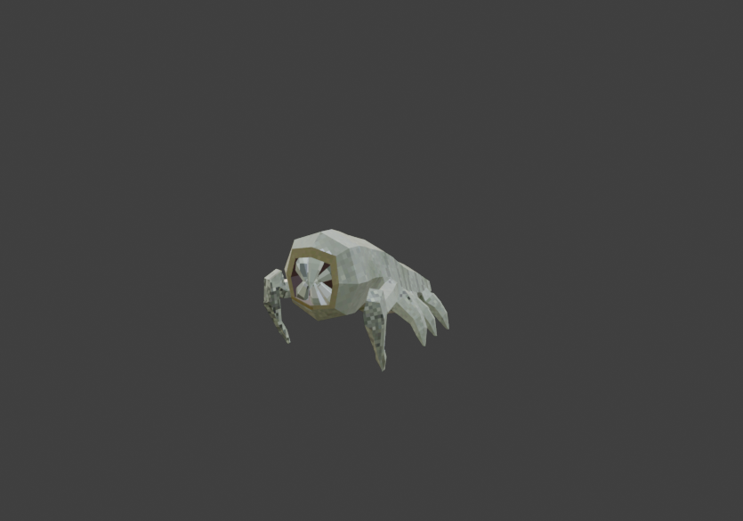
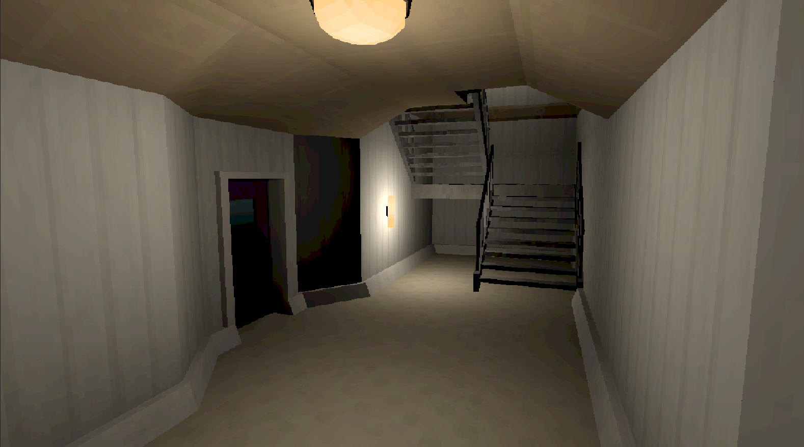
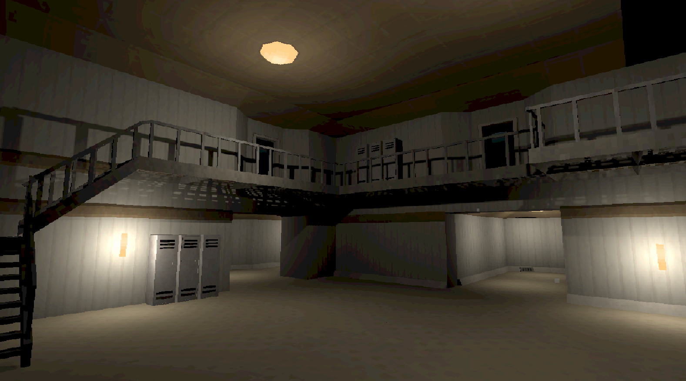

Devlog 27.09.2026
Molefleas, new rooms, breakable doors

New entity: Molefleas
Molefleas are a new territorial enemy that lives in burrows. Burrows can spawn anywhere on the map and help create enemy variety while rewarding stealthy players.
The molefleas are blind, insect-like creatures that use their hearing to sense nearby threats. When a player makes too much noise close to a burrow, the molefleas will emerge and investigate. They will crawl toward the source of the disturbance, and if the player doesn't get out of the way in time or keeps making noise, the molefleas will hunt down and attack the player in packs of 2 or more.
To defeat the molefleas, you must block the burrow by sneaking close to it and holding [E] without making a sound. This means that for a patient player, the molefleas don't pose a big threat, but for impatient players who run around, slam doors, and scream into their mic, the molefleas will definitely become an issue.
Breakable doors and enemy door behavior
Using Unity's navmesh system combined with the character controller posed some issues. The navmesh generated after map generation ignores doors, so enemies won't treat doorways as obstacles. But since I'm using character controllers, enemies would get stuck in doors. This week, I worked on a solution and came up with a new tweakable behavior called "door behavior" in the enemy AI config.
There are currently four options for door behavior:
- Ignore: Enemies will ignore doors, which means they won't do anything when they encounter one and get stuck.
- Break when alerted: Enemies will normally ignore doors, but if they are aggroed in any way or enter the "investigate" state, they will break doors to reach their goals.
- Destroy: More stubborn enemies like the slicer will break doors any time they get in their way.
- Open: Not yet implemented functionally, but I'm saving this for later when I implement smarter enemies.
New rooms
I've finally added rooms that can connect to different floors, adding vertical generation.


Other fixes
I finally got rid of one of the most annoying bugs regarding lighting. I learned that I had the max lights per object set to 4, which created black twitching and ugly black spots in the map. By tweaking the shader and setting max lights per object to 8, the map now looks much better.